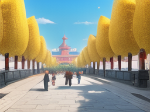
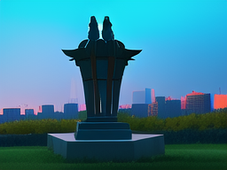

东北美丽的景点介绍
东北的自然风光非常美丽，这里还有很多的人文景观和传统文化，值得去深度的了解和感受。接下来让我们一起来看看那些最美丽的景点吧。
长白山
哈尔滨中央大街

中央大街是哈尔滨最繁华的商业街，也是哈尔滨最具代表性的历史街区之一。这里有欧式建筑、传统大门和雕塑等等，非常适合步行游览。
长春世界雕塑公园

长春世界雕塑公园是世界上最大的戏剧性、主题性雕塑公园，这里有世界各地的雕塑家作品，非常值得一看。
东北的自然风光非常美丽，这里还有很多的人文景观和传统文化，值得去深度的了解和感受。接下来让我们一起来看看那些最美丽的景点吧。
中央大街是哈尔滨最繁华的商业街，也是哈尔滨最具代表性的历史街区之一。这里有欧式建筑、传统大门和雕塑等等，非常适合步行游览。
长春世界雕塑公园是世界上最大的戏剧性、主题性雕塑公园，这里有世界各地的雕塑家作品，非常值得一看。